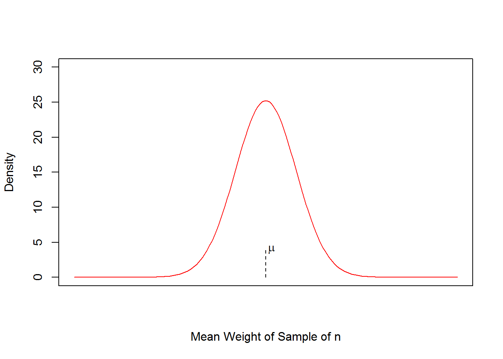
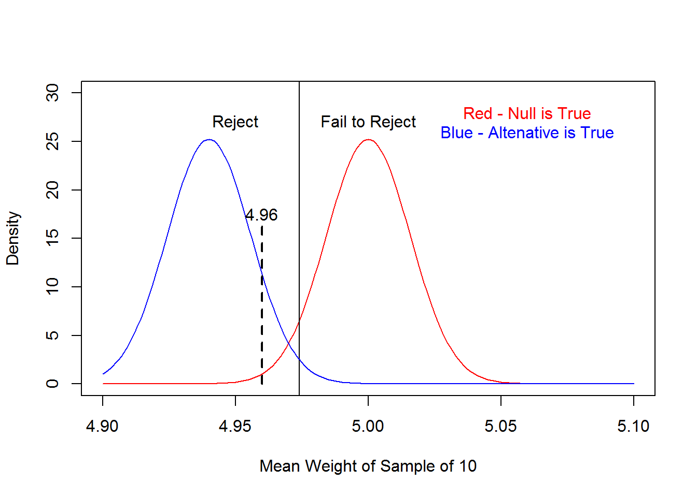
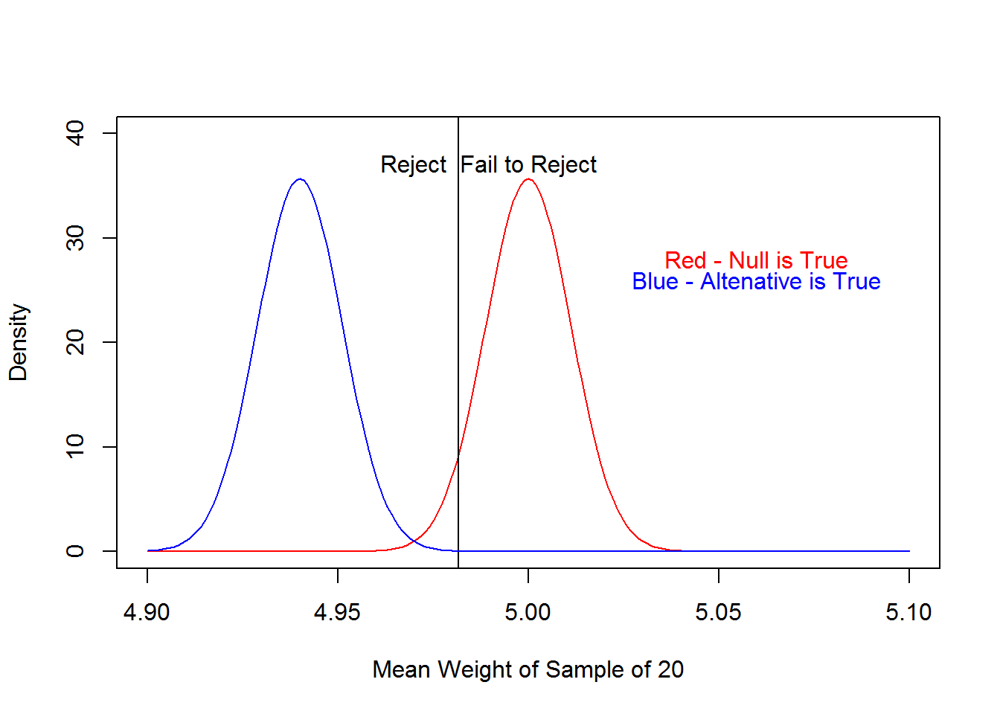

4.4 Inference for Mean (Variance Known)
4.4.1 Objectives
- Conduct and interpret a hypothesis test for the mean with variance known using correct terminology
- Calculate and interpret a confidence interval for the mean
- Use to the link between confidence intervals and hypothesis testing to use confidence intervals for hypothesis testing
4.4.2 Background
The author of textbook does a nice job re-introducing us to the idea of hypothesis testing on page 200. Read the 5 points of the general framework again. The basic idea is that we want to make a decision about a population from a sample since we can’t access the entire population due to time, money, or other practical constraints. We use statistics from the sample to make inference about the population.
4.4.3 Problem
We will look at statistical inference, that is obtaining information about a population parameter from a sample, by using both a hypothesis test and a confidence interval. These two ideas are linked and we will explore that relationship as well.
In 2016 there is a proposition, 106 on the Colorado ballot. Briefly, a “yes” vote supports making assisted death legal among patients with a terminal illness who receive a prognosis of death within six months. To estimate if the measure will pass, a poll of 504 voters was taken and 282 stated they would vote yes. Will proposition 106 pass?
To make things simple we will be performing statistical hypothesis testing for the population mean. The population are the voters and we want to estimate the proportion that will vote yes. For simplicity we will ignore not sure and assume that the outcome is either yes or no. Each vote is a binomial random variable \(Y \sim \mbox{Binom}(1,\pi)\) where \(\pi\) is the probability of voting yes on proposition 106. From the method of moments, an estimate of \(\pi\) is \(\bar{Y}\) the mean of the number of yes votes from a sample of size \(n\), see homework problem 4.1.
To setup as a hypothesis test, we have
\[H_{0}: \pi = 0.50\] \[H_{A}: \pi > 0.50\]
where \(\pi\) is the population proportion of yes votes. In Chapter 2, we solved this with the binomial test.
binom.test(282,504,.5,alt="greater")##
##
##
## data: 282 out of 504
## number of successes = 282, number of trials = 504, p-value =
## 0.004261
## alternative hypothesis: true probability of success is greater than 0.5
## 95 percent confidence interval:
## 0.5219685 1.0000000
## sample estimates:
## probability of success
## 0.5595238Now, let’s use the Central Limit Theorem. From what we now know about the Central Limit Theorem, we can use a normal because the sample mean, treated as a random variable is \[\bar{Y}\dot{\sim} \mbox{Norm}\left(\pi,{\sqrt{\pi(1-\pi) \over n}}\right)\]
The question is what to use for \(\pi\) in the standard deviation. Most people use the hypothesized value but you could also use the estimated value. Thus the p-value is
1-pnorm(282/504,0.50,sqrt(.5*(1-.5)/504))## [1] 0.003763158There is a built-in function
prop.test(282,504,p=.5,alt="greater",correct=FALSE)##
## 1-sample proportions test without continuity correction
##
## data: 282 out of 504
## X-squared = 7.1429, df = 1, p-value = 0.003763
## alternative hypothesis: true p is greater than 0.5
## 95 percent confidence interval:
## 0.5229285 1.0000000
## sample estimates:
## p
## 0.5595238Since the binomial is discrete, we can do better using the continuity correction.
1-pnorm((282-.5)/504,0.50,sqrt(.5*(1-.5)/504))## [1] 0.004293556or using built-in function
prop.test(282,504,p=.5,alt="greater")##
## 1-sample proportions test with continuity correction
##
## data: 282 out of 504
## X-squared = 6.9067, df = 1, p-value = 0.004294
## alternative hypothesis: true p is greater than 0.5
## 95 percent confidence interval:
## 0.5219332 1.0000000
## sample estimates:
## p
## 0.5595238Notice the output gives us a confidence interval. We will discuss this shortly.
4.4.4 Hypothesis Testing for the Mean
Below we give more insight to hypothesis testing. But example 4.5.1 gives a good example. If we assume that a sample size of 10 is sufficient to use the central limit theorem, a questionable assumption without more support, then to test
\[H_{0}: \mu = 5\] \[H_{A}: \mu < 5\]
By the Central Limit Theorem, the sample mean is
\[\bar{X}\dot{\sim} \mbox{Norm}\left(\mu,{\sqrt{\sigma^{2} \over n}}\right)\]
This is more difficult than the last example since we don’t know \(\sigma\). To simplify understanding, our author assumes we know \(\sigma\). In practice this is often not the case but could be if we had historical data. Later in the chapter we will remove this assumption.
We can calculate the p-value as given the null is true. \(\mu = 5\), then we want the probability of our data or more extreme.
pnorm(4.96,5,0.05/sqrt(10))## [1] 0.005706018We may want to know the power of this test. A tool to help us understand power comes from the TeachingDemos package. Use the command run.power.examp(hscale=1.5, vscale=1.5, wait=FALSE) to experiment.
4.4.4.1 Confidence Intervals
The idea of confidence intervals is to make use of the idea that if the variance is known then the distribution of \(\bar{X}\) will be, at least approximately:
\[\bar{X}\dot{\sim} \mbox{Norm}\left(\mu,{\sigma \over \sqrt{n}}\right)\]
Going back to example 4.5.1, this means that
\[\bar{X}\dot{\sim} \mbox{Norm}\left(\mu,{0.05 \over \sqrt{10}}\right)\]
A plot of this distribution is

For a normal we know that 95% of the possible value will fall within \(\pm\) 1.96 standard deviations.

What a confidence interval does is invert this. It centers the distribution on the observed sample mean with the hope that the true mean is captured in an interval.
For our example, the standard deviation was 0.05 and the sample size was 10. Let’s pretend that the true mean, unknown to us, is 5. Thus the sampling distribution of the mean would be

Our observed sample mean was 4.96. If we center the distribution on this value we hope that the true unknown population mean is capture in an interval around the value of 4.96.

Our 95% confidence interval in this case is
qnorm(.025,4.96,.05/sqrt(10))## [1] 4.92901qnorm(.975,4.96,.05/sqrt(10))## [1] 4.99099or equivalently
4.96-qnorm(.975)*.05/sqrt(10)## [1] 4.929014.96+qnorm(.975)*.05/sqrt(10)## [1] 4.99099The discussion at the bottom of page 202 and top of 203 is important. Once data is used a confidence interval has no random value and thus we cannot use the word probability. Instead we use the word confidence to describe the coverage of the process. That is in our example, if we were to repeat the experiment many times, get 10 weights and calculate the 95% confidence interval, 95% of these intervals will capture the true unknown mean. We know nothing about our one particular interval.
Note that we can also change the coverage of the interval. In the extreme a 100% confidence interval will be over the entire domain and a 0% confidence interval will be the point estimate.
Figure 4.13 in the book illustrates the idea of coverage.
4.4.4.2 Link Between Confidence Intervals and Hypothesis Testing
If my confidence interval does not include the value of the mean under the null hypothesis, then I reject the null hypothesis. It is that simple. One-sided confidence intervals and their relationship to hypothesis testing is a little tricky. Think about it.
4.4.5 Hypothesis Testing Explained in Depth
Let’s first start with hypothesis testing. To make things even easier I will use only simple hypothesis of the form:
\[H_{0}: \mu = \mu_{0}\] \[H_{A}: \mu = \mu_{A}\]
This is often not done in practice but it aids in understanding hypothesis testing. To make this concrete lets use example 4.5.1 from the book and modify it to have simple hypotheses.
4.4.5.1 Example 4.5.1 Modified
A manufacturer claims that its 5-pound free weights have a mean weight of 5 pounds with a standard deviation of 0.05 pounds. You believe they have a mean weight of 4.94 pounds. You decided to purchase 10 of these weights and measure them.
Before we continue with this let’s setup the hypothesis test
\[H_{0}: \mu = 5.0\] \[H_{A}: \mu = 4.94\]
We will use \(\bar{X}\) as the test statistic to test this hypothesis. If \(H_{0}\) is true, then
\[\bar{X}\dot{\sim}\mbox{Norm}\left(5.0,{0.05 \over \sqrt{10}}\right)\]
A plot of this will look like

If we use \(\alpha\) the level of significance or probability of a Type I error to be 0.05, we can setup a rejection region. Remember that a Type I error occurs when we reject given that the null hypothesis is true. We calculate this rejection region as follows:
qnorm(.05,5,.05/sqrt(10))## [1] 4.973993Thus our plot

Now since we know the value of \(\mu\) under the alternative hypothesis, we can calculate \(\beta\) the probability of a Type II error or its complement power. In the plot, if \(H_{A}\) were true we would have the following

The probability of a Type II error is the probability we fail to reject, given the alternative is true. In R we calculate this as
1-pnorm(4.973993,4.94,.05/sqrt(10))## [1] 0.01578132So the power, the probability we reject given the alternative is true is
pnorm(4.973993,4.94,.05/sqrt(10))## [1] 0.9842187Now that we have setup our test, we collect data. Here is the data for the weights of the 10 free weights
Less25Data## [1] 4.9 5.0 5.0 5.0 4.8 4.9 4.9 4.9 5.0 5.2mean(Less25Data)## [1] 4.96Our observed sample mean, \(\bar{x}\) is 4.96. In the plot, we have

Thus we reject. We could also calculate the p-value, the probability of the data or more extreme given that the null hypothesis is true.
pnorm(4.96,5,.05/sqrt(10))## [1] 0.005706018Since the p-value is less than \(\alpha\) we reject the null in favor of the alternative. That is based on our data, a sample of ten weights, if the true mean weight were 5 pounds, the probability of observing the sample mean of 4.96 or less is .006, thus we reject that the mean weight is 5 pounds in favor of the hypothesis that the mean weight is 4.94 pounds.
Now let’s see what happens when we change some of the conditions of the problem.
- First we will change \(\alpha\) to 0.10. Here is the plot

The power of this test is
qnorm(.1,5,.05/sqrt(10))## [1] 4.979737pnorm(4.979737,4.94,.05/sqrt(10))## [1] 0.9940177Keeping everything the same, increasing \(\alpha\) decreases \(\beta\) or equivalently increases power.
- Change sample size, but leave \(\alpha\) at 0.05. Here is the plot for a sample size of 20.

Here the power changed to
qnorm(.1,5,.05/sqrt(20))## [1] 4.985672pnorm(4.985672,4.94,.05/sqrt(20))## [1] 0.999978And the p-value, assuming that the sample mean still stayed at 4.96, is
pnorm(4.96,5,.05/sqrt(20))## [1] 0.0001733097- It should be obvious what happens if we change the value of the alternative hypothesis keeping everything else the same.
In practice we use a complex alternative hypothesis such as \[H_{A}: \mu \neq \mu_{0}\] or \[H_{A}: \mu < \mu_{0}\]
All the ideas are the same except that we don’t know the value of \(\mu\) under the alternative hypothesis and thus can’t calculate power. What is done in practice is to specify a practical difference in means between the null and alternative hypothesis. That is, you need a subject matter expert to answer the question “How much would the mean have to differ from the null value for to matter?” Then what is done is that power is specified, typically 0.8 or greater, and a sample size calculated.
The example 4.5.1 in the book show how to calculate the p-value for a two-sided test of means with a known variance. It also gives a nice summary of the possible interpretations of the results.